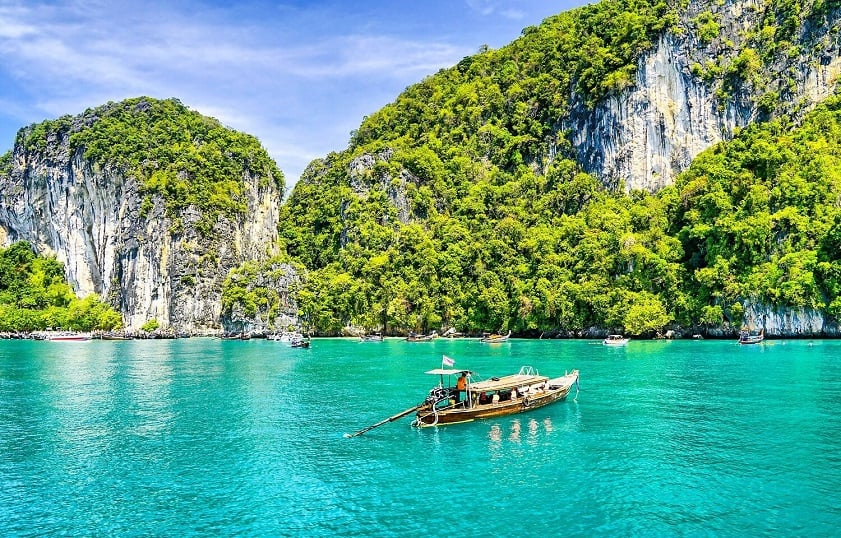
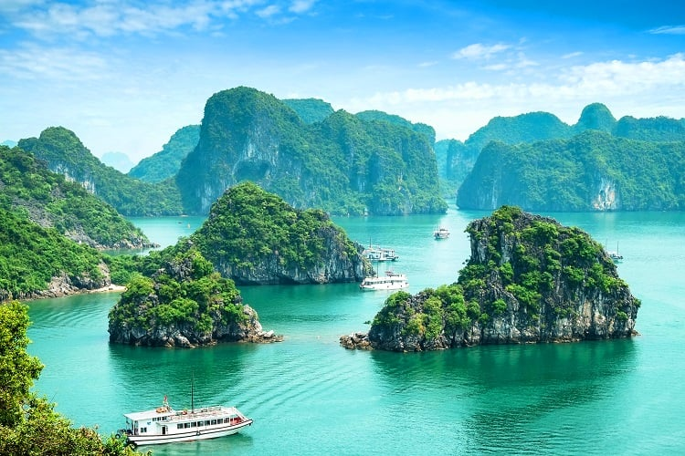
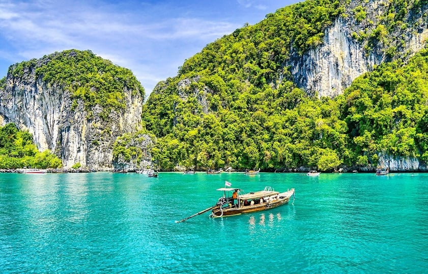
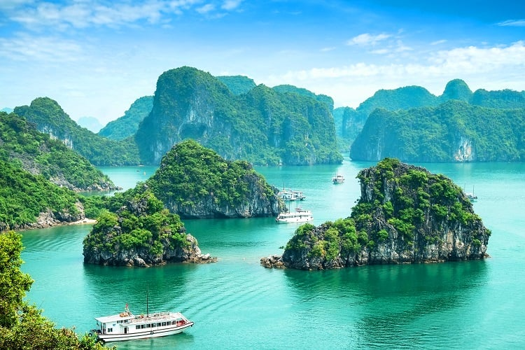

About Us
welcome to Travel your ultimate partner is exploring the world! with a passion for travel and commitment for
trip , we are providing best places to explores you with friendly budget,Tourist places are locations that
attract visitors due to their natural, cultural, historical, or entertainment value. They can include natural
wonders like beaches and mountains, or cultural sites like historical monuments, museums, and temples, as well
as modern attractions like theme parks and zoos,When people travel for pleasure they are called tourists.
Tourism is the business of encouraging and supporting tourists. Many people go on vacation because they want a
break from their everyday lives, or to experience a warmer climate.

 


